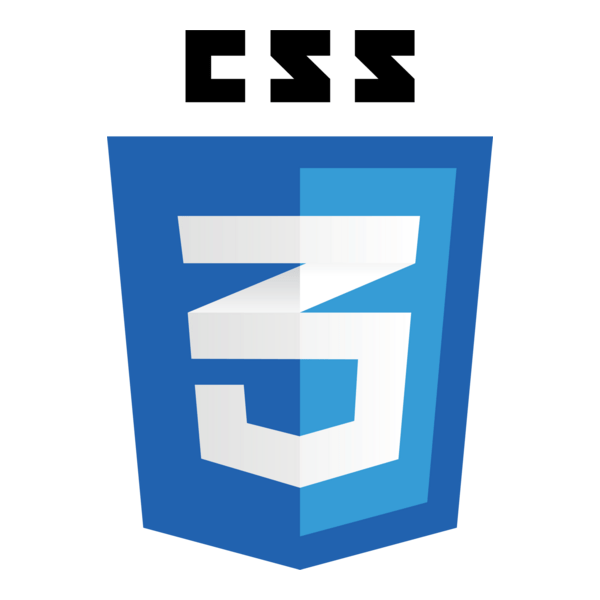

Profile
I am a first-year Computer Science student at Aston University with a passion for software development and technology. I have experience in HTML, CSS, and JavaScript, and I enjoy building practical applications that solve real-world problems. Through my studies and extracurricular activities, I am developing strong problem-solving and programming skills, and I am eager to apply these skills in future projects and work experience opportunities.
Education
BSc Computer Science – Aston University (2025–2029)
I am currently pursuing a Bachelor of Science degree in Computer Science at Aston University,where I am developing a strong foundation in programming, problem solving and computational thinking. This degree is helping me to build the technical and analytical skills required for a career in technology.
Work Experience
Pathways to Engineering – The Sutton Trust (University of Warwick) November 2023 – April 2025
I was selected to take part in the Sutton Trust's Pathways to Engineering programme, where I explored different engineering areas, with a particular focus on software and computer engineering. Through lectures, workshops, and group activities, I developed strong problem-solving, teamwork, and communication skills. The programme also gave me valuable insight into higher education pathways and helped strengthen my interest in a career in technology.
Software Engineering Virtual Job Simulation – Goldman Sachs (Forage) October 2024
I completed a software engineering job simulation focused on cybersecurity and IT governance. I analysed password security practices, identified weaknesses in hashing algorithms, and used Hashcat to demonstrate vulnerabilities. I then produced a professional memo recommending improvements to strengthen overall security. This experience further improved my understanding of what is required to develop secure software.
Skills
- HTML – 70%

- CSS – 65%

- JavaScript – 60%

Interests
- Software development and building practical applications
- Cybersecurity and secure software practices
- Problem solving through programming and logical analysis
- Emerging technologies and engineering innovation